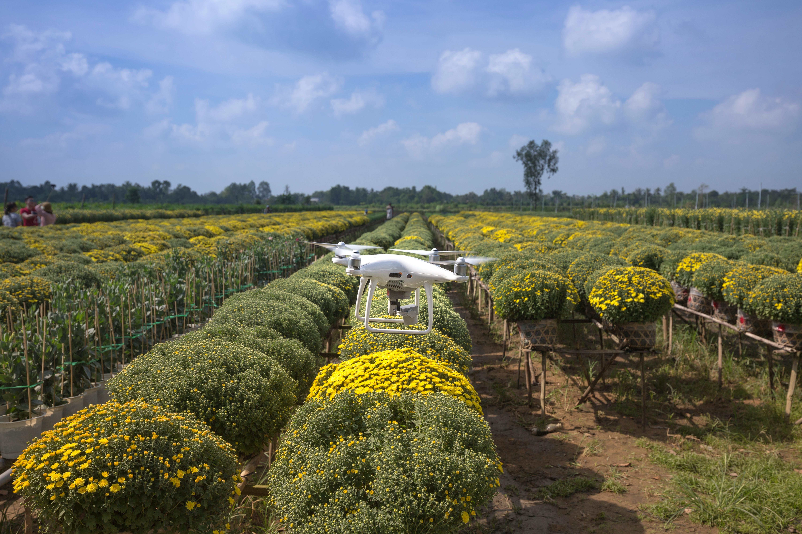

About Us
At AgriTech Connect, we are committed to transforming the agricultural landscape in Nigeria by empowering smallholder farmers through innovative technology. Our mobile application serves as a comprehensive platform that connects farmers with essential resources, expert advice, and direct market access. By offering tools for farm management, real-time weather updates, and a dynamic marketplace, we enable farmers to maximize their productivity and profitability. Our mission is to foster a vibrant agricultural community where knowledge is shared, collaboration flourishes, and food security is strengthened, paving the way for a sustainable future. Join us as we revolutionize farming practices and contribute to achieving Zero Hunger in Nigeria.
The Team
Founders:
Usman Baba Bello – CEO: BSc. Computer Science, Experienced in software development and app design.
Mariam Folashade Kehinde – CTO: Background in Agricultural Economics & Extension and project management
[Advisory Board] – Comprising agricultural experts, local farmers, and business leaders to guide strategy and operations